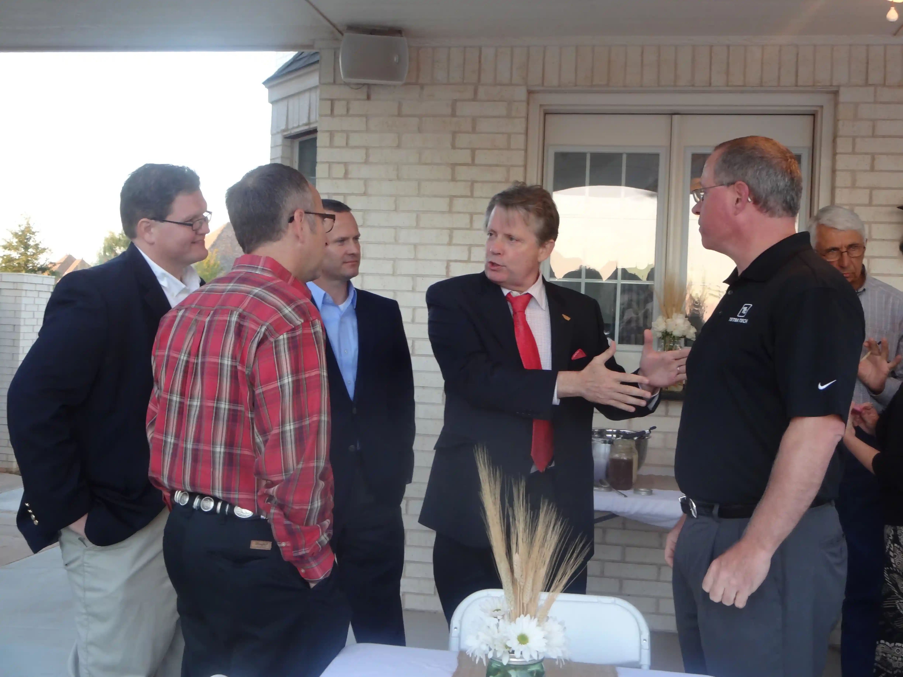
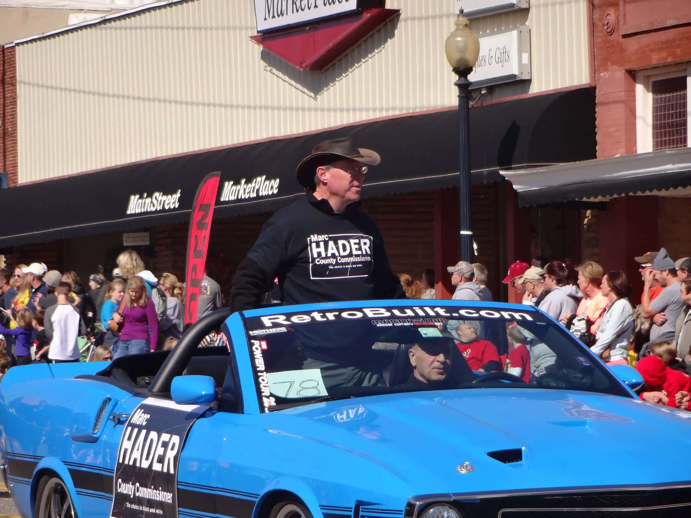

Marc Hader’s Accomplishments
Roads & Bridges
Reconstructed or overlaid over 90 miles of road in El Reno, Okarche, Piedmont, Yukon, OKC, unincorporated areas, and partnered with the Cheyenne and Arapaho tribes. Constant rehabilitation of approximately 200 miles of gravel/shale roads impacted by energy exploration. Reconstructed 9 bridges and rehabilitated others while saving $750,000.
Fiscal Responsibility
Provided management and oversight of nearly $50M across various funds for ~380 employees. Led fiscal restraint with zero-based budgeting, doing more with less, and building up reserves to build a new courthouse. Implemented performance/operational audits, and moved to annual audits to speed State Auditor recommendations. Led the effort to set an election to allow the citizens to vote to lower their sales tax burden.
Public Safety & Facilities
Expanded Juvenile Justice Center ($3.9M) including safe rooms and Cardinal Point Family Justice Center space. Constructed $500K sally port addition for safer inmate transfers.
Community Projects
Brainstormed the plan for constructing the $20M Expo/Events Center, which the fair board had requested since 1981, and did so without raising taxes. Cast the vision for a new administration building/courthouse after setting the standard to do more with less. As such, the county began budgeting on 80% of funds available ao the new building could be financed out of reserve funds instead of asking the citizens for higher taxes.

HR & IT Innovations
Created first county wide HR entity in 111 years of county history and improved IT support & security for records, data, and buildings. Modernized & enhanced the county website making information more readily available to citizens.

Leadership in Times of Crisis
Hader, as Chairman during COVID protected employees' health & saftey while insisting that the doors stayed open to serve the citizens. Held unscrupulous contractors accountable, during terrble ice storm damage at Thanksgiving & Christmas of 2015, who were trying to gouge the taxpayers for storm clean up.